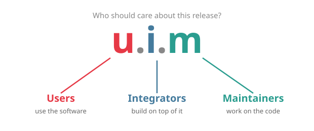

intver.org
Intentional Versioning uses version numbers to tell who should care about a release, not what changed in the code.
A version number x.y.z addresses three audiences:

x — Usersx says: "Users, this release is for you."y — Integratorsy says: "Integrators, this release is for you."z — Maintainersz says: "Maintainers, this release is for you."x.y.z where x, y and z are non-negative integers.0.0.1.The three default audiences — users, integrators, maintainers — fit most projects. If yours doesn't have distinct integrators, y simply won't change much. That's fine.
If you want to be more specific, define your audiences in your README:
This project uses Intentional Versioning (intver.org).
- x: teachers and students (users)
- y: LMS plugin developers (integrators)
- z: core contributors (maintainers)
Badges:


Version numbers say who should pay attention. To say what breaks, use git trailers in your commit messages:
feat: redesign the dashboard
New layout with improved accessibility.
Breaks-Users: the settings page has moved to the profile menu
Breaks-Integrators: DashboardConfig.load() now returns a Result typeThree trailers are available, one per audience:
Breaks-Users:Breaks-Integrators:Breaks-Maintainers:No trailer means nothing breaks. The value after the colon should be a short, human-readable explanation.
x mean a breaking change?y. The scheme still works — it just reflects the reality that this project doesn't have a distinct integrator audience.1.2.3-beta)?x.y.z is identical, so most tools will accept IntVer version strings. The meaning is different, but the structure is the same.